June 19th, 1999
A mod is released for Valve’s popular first person shooter Half-life. It quickly grew immense popularity.
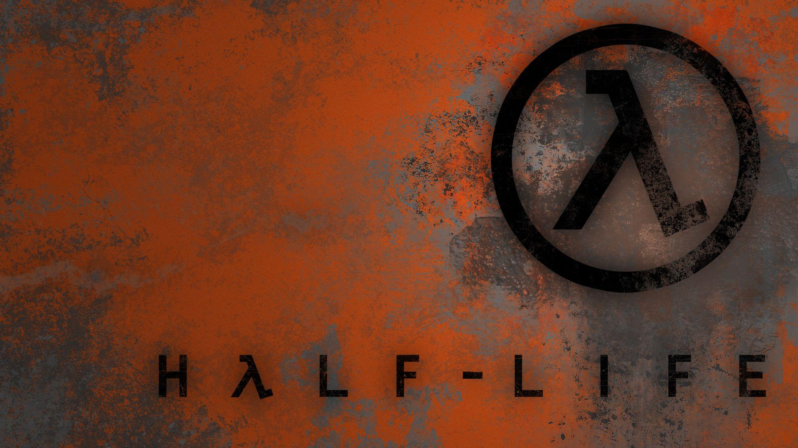
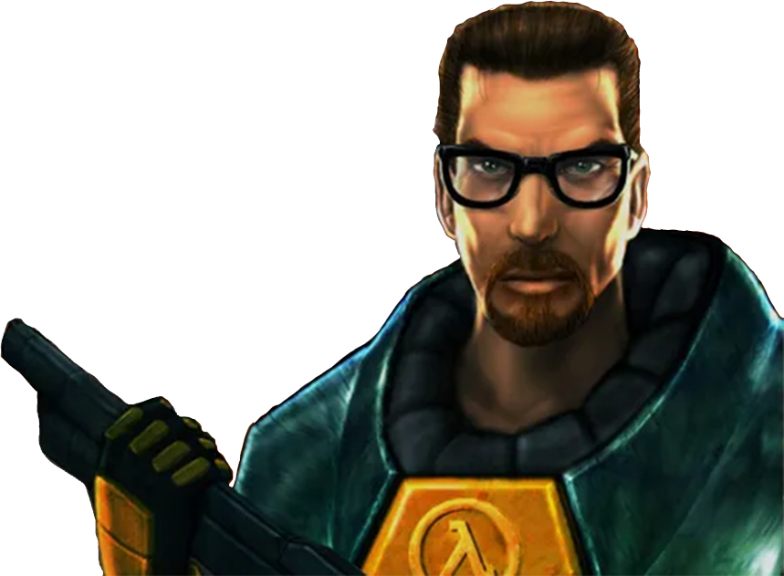
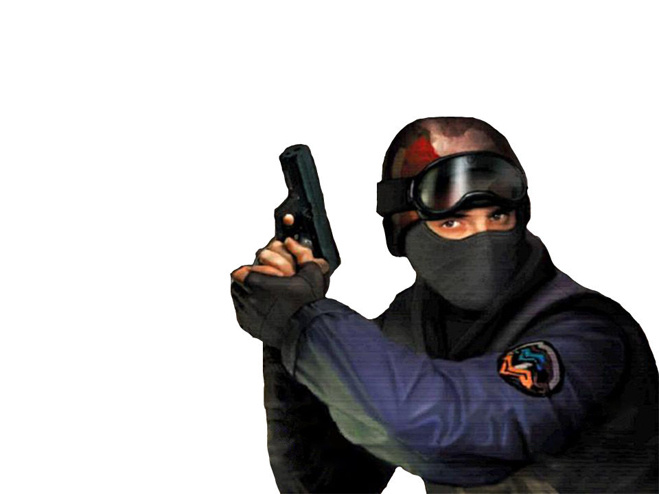
November 8th, 2000
Counter-Strike is acquired by Valve, along with the two developers Minh “Gooseman” Le and Jess Cliffe. Together, they release a stand-alone version of the game.
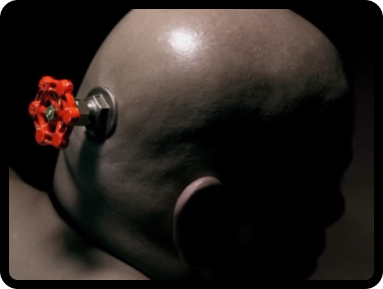
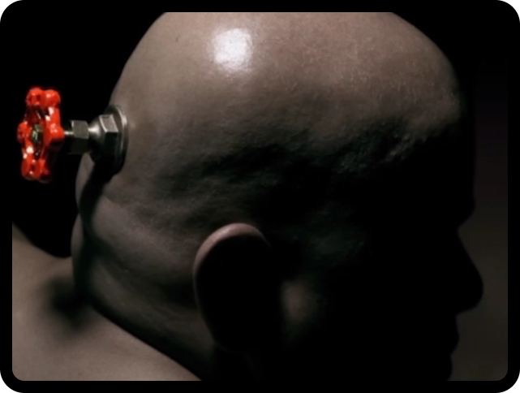
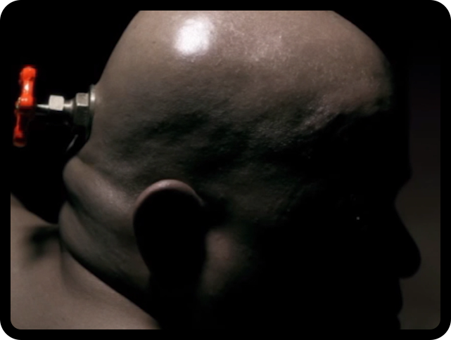
March 23rd, 2004
The second installment in the series is released, Counter-Strike: Condition Zero. It was the first and only Counter-Strike game to feature single-player campaigns.
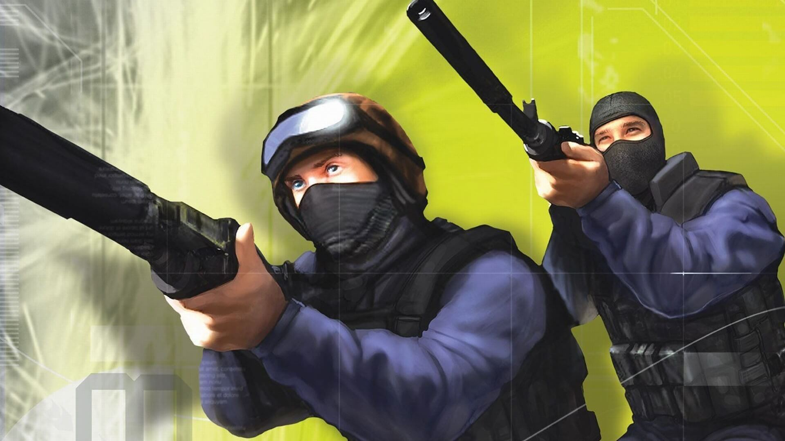
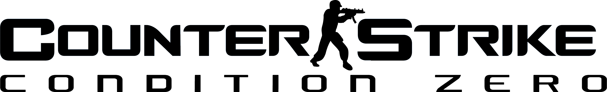
Novemeber 1st, 2004
Being released in the same year as the previous game, Counter-Strike: Source would quickly overshadow its popularity. This installment in the series was loved throughout the community.
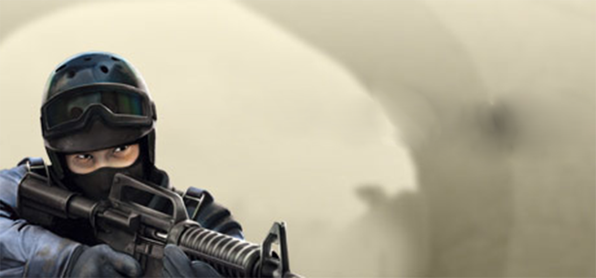
2005-2012
While the popularity of Counter-Strike would continue to grow during this time, Valve put the series on hold and decided to work on other franchises such as Portal 1 and 2, Half-Life 2, Left 4 Dead 1 and 2 and Team Fortress 2.


August 21st, 2012
Valve releases the last game in the Counter-Strike franchise (so far). Counter-Strike Global Offensive still constantly tops the charts for daily player count, almost a decade after it's release.
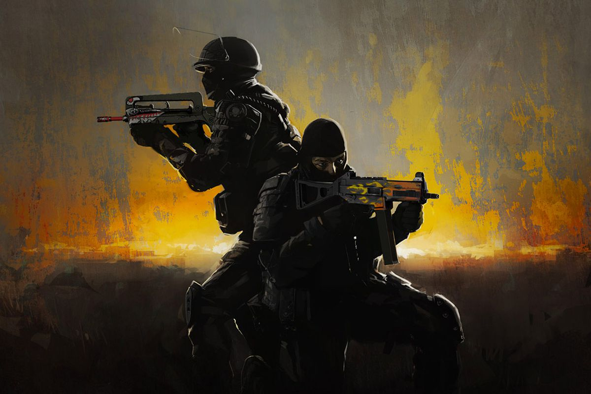

August 14th, 2013
The first weapon case was released for CS:GO. As of 2021, the market for skins in this game is estimated to be worth well over 1 billion USD.

Unknown date
Counter-Strike: Global Offensive is finally re-released on the Source 2 game engine.
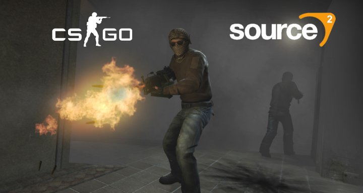